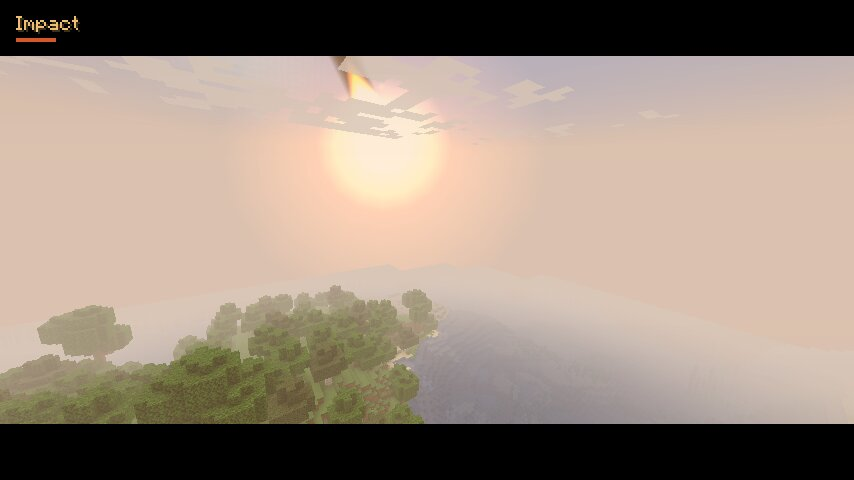
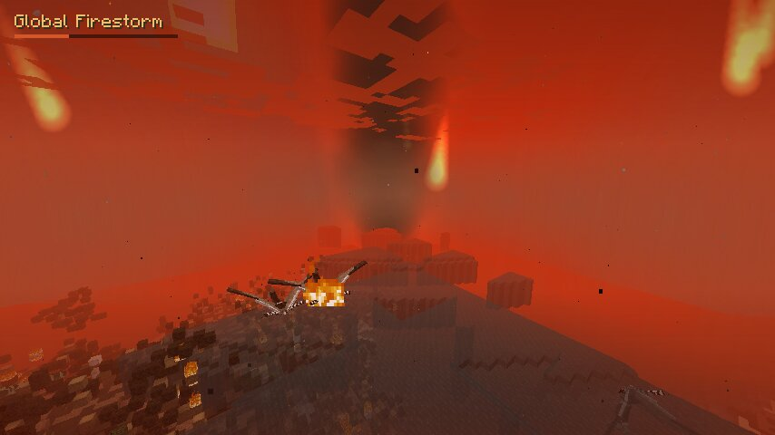
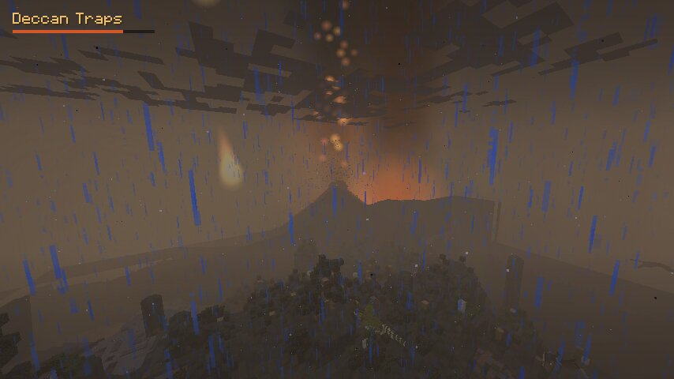
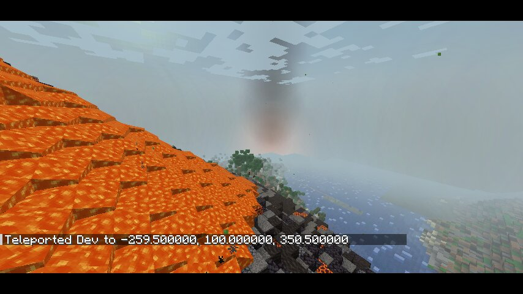
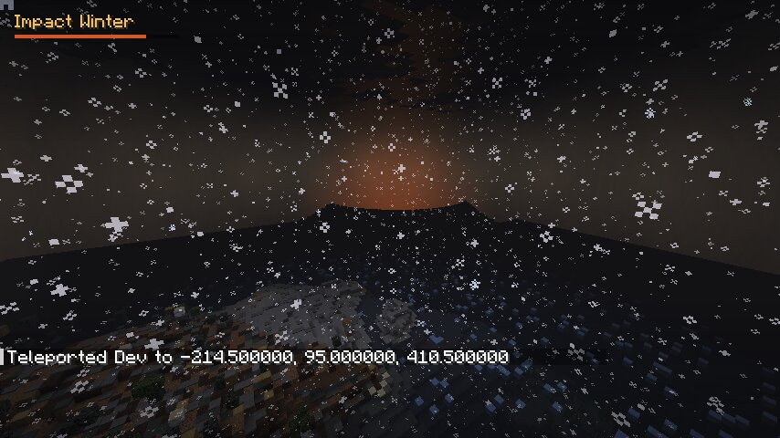

The end of the world, in six acts
- Warning. A new star appears and grows night after night until it has a tail. A countdown ticks, herds stampede, the ground starts to tremble, and in the last seconds all you hear is a heartbeat.
- Impact. The asteroid streaks down trailing fire, the sky brightens, then a white-out. A fireball and a mushroom plume climb 600 blocks, a curtain of molten rock arcs out, a peak-ring crater is torn open with lava in its floor, and a wall of dust races outward flattening forests and throwing blocks, animals and players.
- Global firestorm. Ejecta falls back as burning meteors that explode where they land. Forests burn and the sky glows red. A megatsunami of real water rolls over the lowlands.
- The Deccan Traps. Volcanoes rise out of the ground and erupt again and again, with lava rivers, volcanic bombs, ash columns full of lightning, fissures and acid rain.
- Impact winter. The sun goes out. Snow falls in the tropics, lakes freeze, plants die, and the dinosaurs starve. Stay by a fire or freeze.
- The fern spike. The ash washes away and ferns cover everything. Birds, mammals, crocodiles and turtles come back. Fossils, and the iridium layer, are left in the rock.
Screens





Install
- Install Minecraft 1.20.1 with Forge 47.x (47.4.0 or newer).
- Put the jar in your
modsfolder (on the server too for multiplayer; every player needs it). - Optional: add Fossils and Archeology Revival (Forge 1.20.1) for real dinosaurs, fossils and de-extinction.
- In a world with cheats on, type
/extinction start. Or craft a Celestial Lure (diamond in the middle, fire charges on the sides, crying obsidian in the corners) and use it to call the asteroid down where you look.
Commands
/extinction start [x z], stop, skip, phase <name>, status, reload
Config
config/extinction-common.toml: phase lengths, crater size, tsunami height, ejecta rate, volcanoes, and switches for destruction, biome changes, hazards and music.
New biomes
Impact Crater, Scorched Lands, Ash Wastes, Frozen Ashlands and Fern Spike, each with its own sky, fog and water.
Real geology
Impact breccia with shocked quartz and tektites, and a K-Pg boundary clay layer that drops iridium.
Custom spawns and Fossils and Archeology
Dinosaurs spawn naturally around you until the asteroid comes, so the world is full of herds to lose. After the event only survivors spawn. Every spawn is defined in config/extinction/spawns.json. Edit it and run /extinction reload. Entries for mods you don't have are skipped.
{ "entity": "fossil:triceratops", "phases": ["before", "warning", "impact"],
"weight": 14, "group": [2, 4], "max_nearby": 6, "flee": true }- spawns: any entity from any mod, by phase (
beforeandaftermean natural spawning outside the event), with weight, group size, chance, land/water/air, biome limits, NBT and whether it flees the impact. - extinct / survivors: who starves in the impact winter, becomes a fossil where it dies and stops spawning naturally (default: all F&A creatures except real K-Pg survivors). Revive them with F&A's analyzer and culture vat.
- fossils / deposits: which fossil block each creature leaves, and fossil veins laid into stone, deepslate, sandstone, tuff and calcite during recovery.